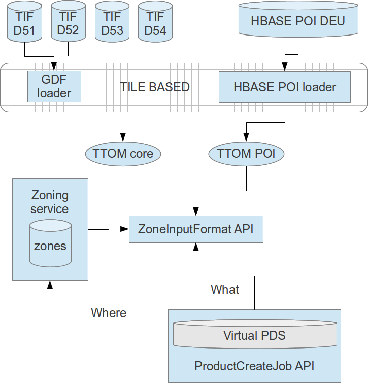
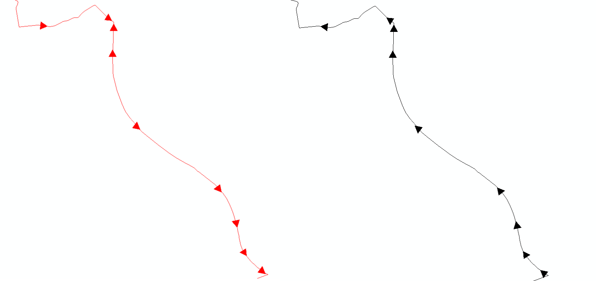

"Deliver MN-R prototype 5 to our customers"
"Make continental and seamless TTOM (for defined feature scope)"
Our product owner
Sprint overview - User stories
The sprint started on the 2nd of April 2013 and ended on the 30th of April 2013.
| Epic |
Story |
SP |
| MNR MAINT |
Package, document, release prototype 4 and 5 + fix feedback (2) |
2 |
| MNR MACHSPEC |
Modeltools enhancements and bug fixes |
2 |
| MNR INFRA |
Clean up and improve development process ease of use |
3 |
| MNR LAYER |
Upgrade to TTOM 3.10 and implement new naming model for network route link |
3 |
| MNR LAYER |
Rework network restrictions and maneuver validity |
3 |
| MNR LAYER |
Implement Level 2 features, Admin political areas, Network Lane info (3) |
6 |
| MNR LAYER |
VW traffic signs (finish spec work + create sample data) |
2 |
| MNR CONTINENT |
Implement seaming in TIF2TTOM (geometry, network element, junction) |
5 |
| MNR CONTINENT |
Implement seaming in TIF2TTOM (administrative areas) |
1 |
Product owner: Timothy Grymonpon
Scrum master: Timothy Grymonpon
Team: Charlotte, Christophe, Dominique, Jan, Jelle, Kevin, Pieter, Plamen, Rebekka
MNR MAINT
Package, document, release prototype 4 and 5 + fix feedback (2)
Previous prototype 2013.04 was succesfully released, on the 5th of April:
- WORLD containing UC3 and D64.
- Delta containing AND
New in release 5, released probably May 2nd: 18 new or updated content layers
Received feedback from Mapscape:
- They have created a first VW NDS product based on MNR.
- They are using the diffs we delivered.
- They would like some more documentation (they refer to MN right now).
- They ask us to split up our data (WORLD -> UC3 + D64).
- They would like country/continent meta information.
- They experienced clipping issues on Eindhoven (release 3).
Partitioning? Next sprint(s)!
Current status (layers, discussions, issues) can always be found here:
http://vos.intra.local/display/CPEMPE/Multinet-R+StatusMNR MACHSPEC
Modeltools enhancements and bug fixes
- Xmi2Pmf converter:
- Fixed width and precision for decimal types.
- Fixed geometry type.
- DITA file generation:
- Fixed entity encoded characters.
- Fixed type description for ranges.
- Fixed the width for varchar columns.
- Fixed the field type for enum columns.
MNR INFRA
Clean up and improve development process ease of use
Making the running of our stack more fluid, and configurable.
- We have one set of scripts responsible for deployment and running.
- Automated tagging for python projects.
- Gate and other configuration is no longer hard-coded
- Out-of-the-box we now have different profiles to run with (periodic, delta, nightly, ...)
- We now also support running manually much better, either on the local machine or on a server
- We documented the directory structure of our prototype releases.
These improvements allow us to manage our automated runs on jenkins a bit better. It also allows for testing and running locally as a developer. It should in the future also aid for deploying and running in production.
MNR LAYER
Upgrade to TTOM 3.10 and implement new naming model for network route link
- Using TTOM_Name objects (NameSet, TransliterationSet, ...)
-
PrimaryName flag is used by the MNR converter so we have the correct name in the product.
- Updates in mnr-converter (Route link, Netw Name, Netw Name Rel, ...)
- Upgrade to new TIF2TTOM
- Recreate TTOM GDF data
- Had to go "back in time" to implement some fixes for seaming (see later).
-
Next up: TTOM 3.12
- Area names
- Ferry Element, Address Area Boundary Element
- Railway Element
MNR LAYER
Rework network restrictions and maneuver validity
- Compared to previous modelchange there was still room for improvement:
- Link to network:
- Moved from MNR_Restriction to MNR_Netw_Restrict_Rel
- Moved from MNR_Maneuver_Validity to MNR_Maneuver_Val_Rel
-
Advantage: normalization benefits: 25% size reduction in our pilot delivery (for WORLD).
-
MNR_Restriction (208MB), now split into three tables:
MNR_Netw_Restriction (161MB), MNR_Restriction (1MB), MNR_Maneuver_Val_Rel (2MB).
-
Also implemented: TimeDomains
- Still one of the largest tables, see our statistics
MNR LAYER
Implement Level 2 features, Admin political areas, Network Lane info (3)
- Intersections (MNR_Inters, MNR_Inters_Idx)
- Roads (MNR_Level2R, MNR_Level2R_Idx)
- Freeway Intersections (MNR_Freeway_Inters, MNR_Freeway_Inters_Idx)
- Political Administrative Area (MNR_AdminPol_Area, MNR_AdminPol_Off_Lang)
- Lane Info (MNR_Lane_Connect, MNR_Lane_Information, MNR_Lane_Restriction_Time_Dom, MNR_Netw_Lane_Info_Rel)
Risk: The more layers we have, the more we need to update when TTOM changes.
Demo later
MNR LAYER
VW traffic signs (finish spec work + create sample data)
- Created test cases in Hakuna Matata
- Tamapper V21.59.001 received on April 22nd, converted Hakuna Matata
- TTOM Model update for traffic sign
- First Draft version of SDS, MNR Specifications available
- Next up:
- Mapping for TIF2TTOM
- Mapping for MultiNet-R
- MN Allcodes: new traffic sign available
- Mapping for TIF2MN?
MNR CONTINENT
Implement seaming in TIF2TTOM (geometry, network element, junction)
Challenge: solve all border artifacts
- no duplicated point/line geometry on dataset border
- no features are split because of dataset borders: we need one DEU/USA/... polygon
- = deduplication / merge challenge
Challenge: seamless TTOM vs dataset based GDF schemas produced by TIF2TTOM
- virtual PDS: we don't have one storage container containing all products
- physical storage remains one GDF schema per TIF dataset (-> not physically seamed!)
- ZoneInputFormat API serving TTOM features gives seamless impression
- making TTOM seamless will be achieved by making a mix of updates
- updates will be done in GDF to make it easier to build seamless TTOM
- updates will be required in ZoneInputFormat to actually merge the features
MNR CONTINENT
Implement seaming in TIF2TTOM (geometry, network element, junction)
MNR CONTINENT
Implement seaming in TIF2TTOM (geometry, network element, junction)
Making TTOM seamless will happen in different phases:
- only a limited feature set is in scope
-
features:
- align geometry (lines) or merge geometry (polygons, complex features)
- give multiple features the same id
-
associations: when combining features, associations of the original features will be combined
-
attributes: when combining features, attributes should be merged intelligently
Advantage of phased approach: if dataset crossing features have aligned/merged geometry and same id, attribute comparison is easy to implement
MNR CONTINENT
Implement seaming in TIF2TTOM (geometry, network element, junction)
Alignment of edge direction on dataset border
- edges on dataset borders have been aligned (south-north direction)
- dataset link libraries are extended and now support 'conversion records' for nodes and edges
Before aligning
After aligning
MNR CONTINENT
Implement seaming in TIF2TTOM (geometry, network element, junction)
Aligning of network element direction on dataset border
- ALL line features (partly) on the dataset border are aligned (south-north)
- Implemented in standard converter (cannot be disabled)
Synchronization of id's
- same principle as for Junctions in current MN Shapefile/Oracle products: instead of creating conversion records, feature id's are updated (from the original id to a synchronized id)
-
important consequence: dataset is not encoded any more in UUID of feature!
- implemented for ALL features where we create conversion records for in TIF2MN
- additionally implemented for node, edge, admin area
- ZoneInputFormat merges features with the same id and their associations (not yet attributes)
MNR CONTINENT
Implement seaming in TIF2TTOM (administrative areas)
- DNA based merge approach
- DNA used = hierarchy of official codes (no geometry used)
-
BEL - 02000 - 40000 - 44000 - 44021 is the DNA of the admin order 8 Gent in Belgium
-
USA - CA is DNA of the state of California in the USA
-
USA - CA - CA07 is DNA of San Fransisco county
-
FRA is DNA of France (Clipperton Island ?)
- all features with same DNA are merged into one feature (our neighbouring country and oversea areas which have FRA as order 0 code will all be part of the same feature)
- even small admin areas (order 8/9) can be dataset crossing (Alaska: +180°/-180° border)
- implemented for all admin area orders (0-9)
WARNING: DNA backend used is dataset link Oracle database (not yet a structural DNA solution scalable up to billions of DNA)
MNR CONTINENT
Implement seaming in TIF2TTOM (administrative areas)
Demo
- Seamless MNR of Ghent (Hakuna Matata version)
- Seamless MNR of Germany (preview)
←→
/
#